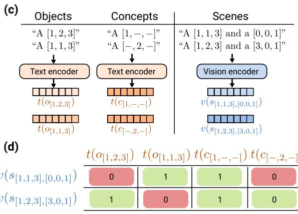

先说结论。视觉-语言自监督核心是共享语义空间，这篇帮助判断图文表征的 compositionality 短板。 指出 CLIP scene embedding 的可加性解释单模态 probe 成功，但高复杂度绑定阻碍未见组合泛化。
Figureure 14 · Object editing with SINGLE-OBJ embeddingsFigure 14. Object editing with SINGLE-OBJ embeddings. Intervention strength k is varied for CLEVR image embeddings using object embeddings estimated from single-object scenes.这张图来自论文 PDF 的结构化抽取。当前用于辅助理解 How can embedding models bind concepts? 的方法或实验，请结合正文精读段落一起看。

Figureure 5 · Controlled setup for studying generalizable bindingFigure 5. Controlled setup for studying generalizable binding. We train transformer-based embedding models on synthetic multi-object data to test whether binding can generalize to entirely unseen objects. (a) Data design: We vary the training coverage $\rho _ { \mathrm { t r a i n } }$ from 0.1 to 0.9, controlling what fraction of the object space the model observes during training. (b) Scene construction: Training scenes are composed of objects from the training split (blue); test scenes are composed of objects from the held-out split (red). Crucially, test objects have concept configurations that never appeared during training. (c) Encoder design: Following CLIP’s architecture, we use two independent encoders: a “text” encoder that embeds individual objects or concepts, and a “vision” encoder that embeds full scenes. Both produce embeddings in $\mathbb { R } ^ { 5 1 2 }$ . (d) Training objective: We optimize a contrastive retrieval loss using cosine similarity. The table shows a training batch where rows are scene embeddings v(s) and columns are object/concept embeddings t(·); green indicates matching pairs, red indicates mismatches.这张图概括 How can embedding models bind concepts? 的整体方法流程。阅读时先看模块之间传递的训练信号，再看作者如何把目标拆成可优化的子问题。